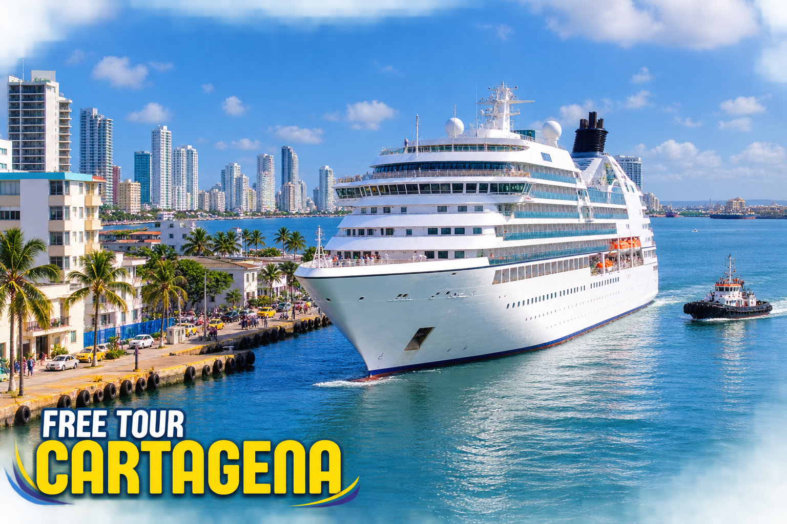

Si llegas en crucero a Cartagena, Colombia, desembarcarás en la Terminal de Cruceros de Manga (Sociedad Portuaria), ubicada a solo 10-15 minutos en vehículo del Centro Histórico. Cuenta con un aviario ecológico gratuito en sus instalaciones. La mejor opción para optimizar una escala de 5 a 8 horas es reservar un tour con recogida en el puerto que garantice el regreso puntual antes de la hora límite de abordaje.
Detalles y Características del Tour
| Lugar de Atraque | Terminal de Cruceros de Manga (Sociedad Portuaria de Cartagena) |
|---|---|
| Distancia al Centro | 4.5 km (10 a 15 minutos en vehículo) |
| Servicios en el Puerto | Aviario ecológico con flamencos, WiFi, tiendas de café y souvenirs |
| Moneda Aceptada | Dólares estadounidenses (USD) y tarjetas de crédito ampliamente aceptados |
| Tour Recomendado | City Tour 4 Horas con transporte A/A y regreso garantizado |
| Tiempo de Regreso Seguro | Mínimo 2 horas antes de la hora fijada para el zarpe |
Consejos de Oro para Cruceristas en Cartagena
Al salir de la terminal de cruceros te encontrarás con un oasis ecológico lleno de flamencos, tucanes y loros. Tras cruzar la salida oficial del puerto, muchos taxistas informales intentarán ofrecerte recorridos a precios elevados. Contratar tu excursión previamente con Free Tour Cartagena te asegura una tarifa transparente, guía profesional bilingüe con carné oficial de turismo y transporte climatizado esperándote con tu nombre.
Itinerario Paso a Paso
Descubre el recorrido detallado que realizamos en cada parada para aprovechar al máximo tu tiempo:
1. Desembarque en el Puerto
Tránsito por el aviario de la terminal y punto de encuentro con tu guía en la puerta exterior.
2. Visita Panorámica a la Popa y Castillo
Vistas del convento en la cima y paradas fotográficas en la gran fortaleza de San Felipe.
3. Caminata Guiada en el Centro Colonial
Paseo guiado a pie por las calles seguras de la Ciudad Amurallada y Getsemaní.
4. Tiempo Libre de Compras
Oportunidad para comprar café Juan Valdez, artesanías y esmeraldas colombianas certificadas.
5. Retorno al Puerto
Llegada con suficiente holgura al muelle para abordar sin ningún estrés.

Mapa y Punto de Encuentro
Ubicación de la Terminal de Cruceros de Manga y su conexión rápida con el Centro Histórico:
¿Listo para vivir la magia de Cartagena?
Reserva tu lugar ahora mismo sin pagos adelantados. Asegura tu guía oficial de sombrilla amarilla y disfruta de una experiencia inolvidable.
Preguntas Frecuentes
¿Qué pasa si el barco cambia de horario de llegada?
Nuestro equipo de operaciones monitorea el arribo de cada barco. Nos adaptamos a cualquier cambio de hora sin penalidades.
¿Se aceptan dólares en Cartagena?
Sí, los cruceristas pueden pagar fácilmente en dólares estadounidenses en prácticamente todos los establecimientos turísticos y para sus propinas.
¿Puedo reservar un tour privado para mi familia del crucero?
¡Por supuesto! Ofrecemos vans y microbuses privados para familias o grupos de amigos desde el puerto.